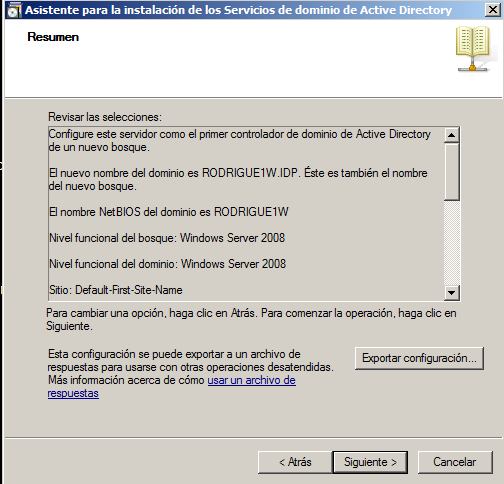
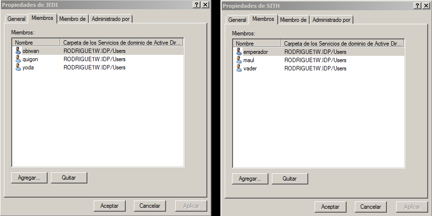
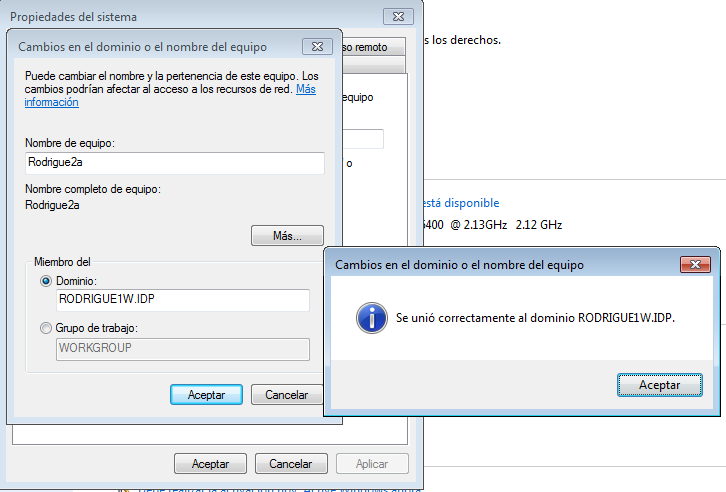
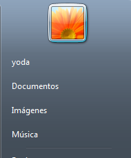
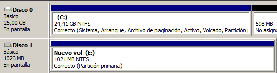

- Módulo: Sistemas Operativos
- Título del trabajo PDC Windserver.
- Componentes del grupo: Güinel Rodríguez García.
- Curso Académico: 2013/2014
- Fecha de entrega: 24 de abril de 2014
-En esta práctica vamos a montar un PDC (Controlador Primario de Dominio)
-Realizaremos una configuración inicial en windows server que nos proporciona el profesor.
-En el controlador del dominio debemos poner unos parámetros que nos solicita el profesor.
-Para la instalación del dominio debemos entrar en la herramienta de 'active directory'.

-Creamos unos grupos y usuarios que se encuentran especificados en la documentación prestada por el profesor.

-Unimos el equipo cliente con el dominio, con unos determinados parámetros establecidos por el profesor.

-Comprobamos a ver si nos deja entrar en la máquina cliente.

-Debemos crear un segundo disco y debe ser formateado.

-Debemos de crear una serie de carpetas especificadas por el profesor.
-El parámetro de perfiles obligatorios no se ha podido realizar.
-También he tenido problemas con el dominio, ya que no tenía bien configurada las MV.